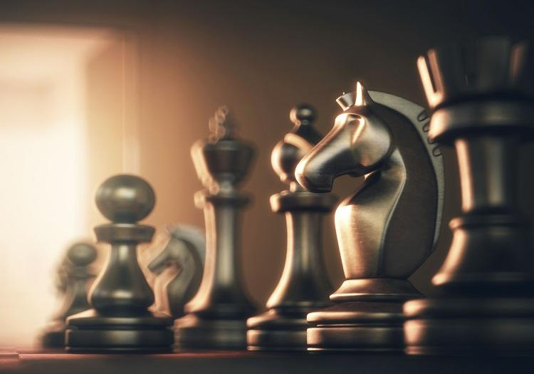

Шахи
Шахи це не просто розминка розуму-це гра королів.Шахи-це розумне керування ваших військ,можна сказати стратегія і тактика в одному флаконі.

Топ 5 цікавих фактів про шахи
- У світі інтелектуальних ігор шахи займають особливе місце.
Вони здобули любов багатьох мільйонів жителів Землі.
- Шахи — це одна з найвідоміших стратегічних ігор на нашій планеті, їх історія налічує кілька століть і надзвичайно цікава.
- Шахи походять від давньоіндійської гри VI століття чатуранга, чия назва перекладається з санскриту як “чотири підрозділи війська”, що включає в себе піхоту, кінноту, слонів і колісниці, які представлені в шахах пішаком, конем, слоном і турою.
- У 1561 році іспанський священик Руї Лопес де Сегура написав книгу «про винахідливість і мистецтво гри в шахи», яка стала першим серйозним вивченням цієї гри. З ім’ям Руї Лопеса пов’язано створення іспанського дебюту, так як найбільшу увагу в своїй праці Лопес приділяв саме початку гри.
- Найстаріша із записаних шахових партій відноситься до 900 року – це була гра між багдадським літописцем і його учнем.
Топ 5 моїх рекомендацій по шахам
- Бути впевненим в собі
- Бути уважним
- Самовдосконалюватися читати книги про шахи
- Мати план розвитку партії
- Вивчати дебюти
Силка на крутий сайт по шахам
Сайт по шахам
Бувайте малята люби